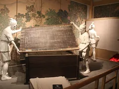
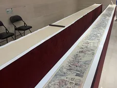
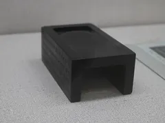
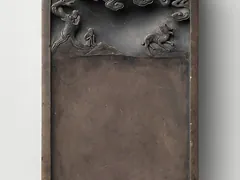
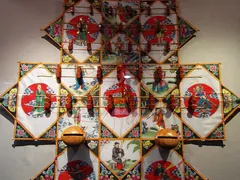
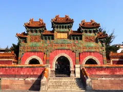
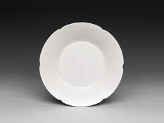
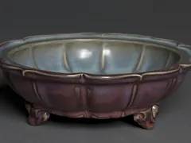
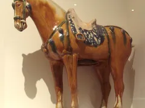

非遗图鉴 / 天工造物
08
非遗图鉴 · 传统技艺
天工造物
传统技艺 · 287 项、629 子项 · 第 2 / 5 页（Ⅷ-61 至 Ⅷ-120）
每一条只列名录上的事实：编号、名称、申报地区或单位、公布年份和批次。详情看中国非物质文化遗产网的官方页。在名录检索里查这一门类 →
- Ⅷ-61
- Ⅷ-62
镇江恒顺香醋酿制技艺
- 江苏省镇江市2006 第一批 · 新增项目官方页 →
- Ⅷ-63
武夷岩茶（大红袍）制作技艺
- 福建省武夷山市2006 第一批 · 新增项目官方页 →
- Ⅷ-64
- Ⅷ-65
宣纸制作技艺
- 安徽省泾县2006 第一批 · 新增项目官方页 →

Four Treasures of the Study, Exhibit at Anhui Provincial Museum, Hefei. Complete indexed…图：Gary Todd from Xinzheng, China / CC0 / 维基共享资源。本站已缩放裁切。 - Ⅷ-66
铅山连四纸制作技艺
- 江西省铅山县2006 第一批 · 新增项目官方页 →
- Ⅷ-67
- Ⅷ-68
- Ⅷ-69
藏族造纸技艺
- 西藏自治区2006 第一批 · 新增项目官方页 →
- Ⅷ-70
维吾尔族桑皮纸制作技艺

“新疆是个好地方—对口援疆19省市非遗展”中展出的桑皮纸与用桑皮纸完成的画作图：HaziiDozen / CC BY-SA 4.0 / 维基共享资源。本站已缩放裁切，按 CC BY-SA 4.0 同样许可共享。 - Ⅷ-71
- Ⅷ-72
湖笔制作技艺
- 浙江省湖州市2006 第一批 · 新增项目官方页 →
- Ⅷ-73
- Ⅷ-74

程瑶田铭宋皱砂纹歙砚，藏于安徽省歙县博物馆图：Doctoroftcm / CC BY-SA 3.0 / 维基共享资源。本站已缩放裁切，按 CC BY-SA 3.0 同样许可共享。 - Ⅷ-75
端砚制作技艺
- 广东省肇庆市2006 第一批 · 新增项目官方页 →

清端砚，大都会艺术博物馆藏图：大都会艺术博物馆（The Metropolitan Museum of Art） / Public Domain (Open Access, CC0) / 大都会艺术博物馆。本站已缩放裁切。 - Ⅷ-76
金星砚制作技艺
- 江西省星子县2006 第一批 · 新增项目官方页 →
- Ⅷ-77
- Ⅷ-78
- Ⅷ-79
金陵刻经印刷技艺
- 江苏省南京市2006 第一批 · 新增项目官方页 →
- Ⅷ-80
- Ⅷ-81
- Ⅷ-82
- Ⅷ-83
- Ⅷ-84
黎族树皮布制作技艺
- 海南省保亭黎族苗族自治县2006 第一批 · 新增项目官方页 →
- Ⅷ-85
赫哲族鱼皮制作技艺
- 黑龙江省2006 第一批 · 新增项目官方页 →
- Ⅷ-86
- Ⅷ-87
黎族钻木取火技艺
- 海南省保亭黎族苗族自治县2006 第一批 · 新增项目官方页 →
- Ⅷ-88
风筝制作技艺

南通博物苑藏南通板鹞图：猫猫的日记本 / CC BY-SA 3.0 / 维基共享资源。本站已缩放裁切，按 CC BY-SA 3.0 同样许可共享。 - Ⅷ-89
A famous Chinese herb tea shop in Central Hong Kong - Good Spring Company Limited 春回堂涼茶…图：无法识别作者。根据版权声明推断作者为TangHon~commonswiki。 / CC BY-SA 2.5 / 维基共享资源。本站已缩放裁切，按 CC BY-SA 2.5 同样许可共享。 - Ⅷ-90
琉璃烧制技艺

普陀宗乘之庙琉璃牌坊, 为“三间四柱七楼”式样.图：Gisling / CC BY-SA 4.0 / 维基共享资源。本站已缩放裁切，按 CC BY-SA 4.0 同样许可共享。 - Ⅷ-91
临清贡砖烧制技艺
- 山东省临清市2008 第二批 · 新增项目官方页 →
- Ⅷ-92
定瓷烧制技艺
- 河北省曲阳县2008 第二批 · 新增项目官方页 →

北宋定窑盘，大都会艺术博物馆藏图：大都会艺术博物馆（The Metropolitan Museum of Art） / Public Domain (Open Access, CC0) / 大都会艺术博物馆。本站已缩放裁切。 - Ⅷ-93
钧瓷烧制技艺
- 河南省禹州市2008 第二批 · 新增项目官方页 →

明钧窑花盆，克利夫兰艺术博物馆藏图：克利夫兰艺术博物馆（The Cleveland Museum of Art） / CC0 1.0 / 克利夫兰艺术博物馆。本站已缩放裁切。 - Ⅷ-94
唐三彩烧制技艺
- 河南省洛阳市2008 第二批 · 新增项目官方页 →

Sancai glazed ceramic horse, Tang Dynasty of China, 7th-8th Century图：PHGCOM / CC BY-SA 3.0 / 维基共享资源。本站已缩放裁切，按 CC BY-SA 3.0 同样许可共享。 - Ⅷ-95
醴陵釉下五彩瓷烧制技艺
- 湖南省醴陵市2008 第二批 · 新增项目官方页 →
- Ⅷ-96
枫溪瓷烧制技艺
- 广东省潮州市枫溪区2008 第二批 · 新增项目官方页 →
- Ⅷ-97
广彩瓷烧制技艺
- 广东省广州市2008 第二批 · 新增项目官方页 →
- Ⅷ-98
陶器烧制技艺
- 陶器烧制技艺（钦州坭兴陶烧制技艺）广西壮族自治区钦州市2008 第二批 · 新增项目官方页 →
- 陶器烧制技艺（藏族黑陶烧制技艺）四川省稻城县2008 第二批 · 新增项目官方页 →
- 陶器烧制技艺（藏族黑陶烧制技艺）云南省迪庆藏族自治州2008 第二批 · 新增项目官方页 →
- 陶器烧制技艺（藏族黑陶烧制技艺）青海省囊谦县2008 第二批 · 新增项目官方页 →
- 陶器烧制技艺（牙舟陶器烧制技艺）贵州省平塘县2008 第二批 · 新增项目官方页 →
- 陶器烧制技艺（建水紫陶烧制技艺）云南省建水县2008 第二批 · 新增项目官方页 →
- 陶器烧制技艺（荥经砂器烧制技艺）四川省荥经县2008 第二批 · 新增项目官方页 →
- 陶器烧制技艺（黎族泥片制陶技艺）海南省白沙黎族自治县2011 第三批 · 扩展项目官方页 →
- 陶器烧制技艺（荣昌陶器制作技艺）重庆市荣昌县2011 第三批 · 扩展项目官方页 →
- 陶器烧制技艺（平定砂器制作技艺）山西省平定县2014 第四批 · 扩展项目官方页 →
- 陶器烧制技艺（平定黑釉刻花陶瓷制作技艺）山西省平定县2014 第四批 · 扩展项目官方页 →
- 陶器烧制技艺（宜兴均陶制作技艺）江苏省宜兴市2014 第四批 · 扩展项目官方页 →
- 陶器烧制技艺（德州黑陶烧制技艺）山东省德州市2014 第四批 · 扩展项目官方页 →
- 陶器烧制技艺（枫溪手拉朱泥壶制作技艺）广东省潮州市2014 第四批 · 扩展项目官方页 →
- 陶器烧制技艺（痘姆陶器烧制技艺）安徽省安庆市潜山市2021 第五批 · 扩展项目官方页 →
- Ⅷ-99
- Ⅷ-100
传统棉纺织技艺
- 河北省魏县2008 第二批 · 新增项目官方页 →
- 河北省肥乡县2008 第二批 · 新增项目官方页 →
- 新疆维吾尔自治区伽师县2008 第二批 · 新增项目官方页 →
- 传统棉纺织技艺（南通色织土布技艺）江苏省南通市2011 第三批 · 扩展项目官方页 →
- 传统棉纺织技艺（余姚土布制作技艺）浙江省余姚市2011 第三批 · 扩展项目官方页 →
- 传统棉纺织技艺（维吾尔族帕拉孜纺织技艺）新疆维吾尔自治区拜城县2011 第三批 · 扩展项目官方页 →
- 传统棉纺织技艺（威县土布纺织技艺）河北省威县2014 第四批 · 扩展项目官方页 →
- 传统棉纺织技艺（傈僳族火草织布技艺）四川省德昌县2014 第四批 · 扩展项目官方页 →
- 传统棉纺织技艺（惠畅土布制作技艺）山西省运城市永济市2021 第五批 · 扩展项目官方页 →
- 传统棉纺织技艺（枣阳粗布制作技艺）湖北省襄阳市枣阳市2021 第五批 · 扩展项目官方页 →
- Ⅷ-101
- Ⅷ-102
- Ⅷ-103
- Ⅷ-104
侗锦织造技艺
- 湖南省通道侗族自治县2008 第二批 · 新增项目官方页 →
- Ⅷ-105
- Ⅷ-106
傣族织锦技艺
- 云南省西双版纳傣族自治州2008 第二批 · 新增项目官方页 →
- Ⅷ-107
香云纱染整技艺
- 广东省佛山市顺德区2008 第二批 · 新增项目官方页 →
- Ⅷ-108
- Ⅷ-109
新疆维吾尔族艾德莱斯绸织染技艺
- 新疆维吾尔自治区洛浦县2008 第二批 · 新增项目官方页 →
- Ⅷ-110
地毯织造技艺
- 地毯织造技艺（北京宫毯织造技艺）北京市2008 第二批 · 新增项目官方页 →
- 地毯织造技艺（阿拉善地毯织造技艺）内蒙古自治区阿拉善左旗2008 第二批 · 新增项目官方页 →
- 地毯织造技艺（维吾尔族地毯织造技艺）新疆维吾尔自治区洛浦县2008 第二批 · 新增项目官方页 →
- 地毯织造技艺（阆中丝毯织造技艺）四川省阆中市2014 第四批 · 扩展项目官方页 →
- 地毯织造技艺（天水丝毯织造技艺）甘肃省天水市秦州区2014 第四批 · 扩展项目官方页 →
- 地毯织造技艺（如皋丝毯织造技艺）江苏省南通市如皋市2021 第五批 · 扩展项目官方页 →
- 地毯织造技艺（宁夏手工毯织造技艺）宁夏回族自治区2021 第五批 · 扩展项目官方页 →
- Ⅷ-111
- Ⅷ-112
- Ⅷ-113
盛锡福皮帽制作技艺
- 北京市东城区2008 第二批 · 新增项目官方页 →
- Ⅷ-114
维吾尔族卡拉库尔胎羔皮帽制作技艺
- 新疆维吾尔自治区沙雅县2008 第二批 · 新增项目官方页 →
- Ⅷ-115
- Ⅷ-116
黄金溜槽堆石砌灶冶炼技艺
- 山东省招远市2008 第二批 · 新增项目官方页 →
- Ⅷ-117
- Ⅷ-118
斑铜制作技艺
- 云南省曲靖市2008 第二批 · 新增项目官方页 →
- Ⅷ-119
铜雕技艺
- 浙江省杭州市2008 第二批 · 新增项目官方页 →
- Ⅷ-120